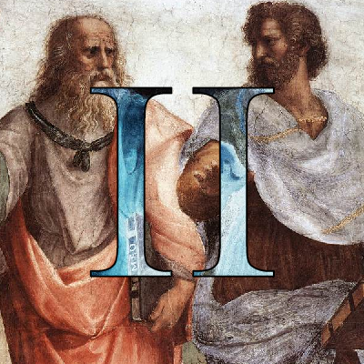

Repository

Fake News detector 🏆
Python · NLP · regexAstonHack winner. Collaberating with three others, we generated browser extensions which use several collated metrics, including natural language processsing, Majestic’s API and other user’s votes to try and assign some truth value to sites on the internet.
Repository

Idle Incremental Game
HTML / CSS · JavaScript / jQuery · BootstrapA browser game built to practice basic web development skills and familiarity with the DOM. I endeavored to keep the UI simple, uncluttered and responsive.
Repository

History Scraper 🏆
Python · Beautiful Soup · MatplotlibHackNotts winner. I spent the coding sprint developing functions to scrub websites, mainly focusing on Wikipedia, a rich but poorly standardized repository of information. The animated pie chart shows how the UK's cumulative percentage of war victories and defeats has changed from 1707 (formation) to present day.
Repository

Rise of Nations Script
XML · BHS [derivative of C and JavaScripts]Rise of Nations is an incredible Real-time strategy game with it's own scripting language and even an IDE. I wrote a script which turns the game into a tower defense, composing and marching increasingly strong waves at the player. The script can be used in conjunction with other game mods.
Repository